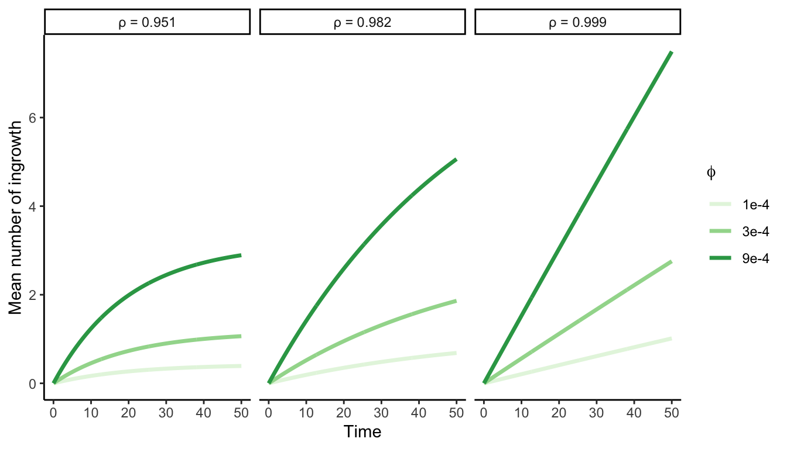

3 Model description
Our study characterizes forest tree population dynamics using three functions or vital rates that determine each tree’s fate. The growth function describes how individual trees increase in size, while the survival function determines the probability of staying alive throughout their lifespan. The recruitment model describes the number of individuals ingressing the population, identified by their size surpassing the 12.7 cm threshold.
Because trees are long-lived with a wide range of possible sizes among trees, these three vital rates should be size-dependent. However, due to a lack of data regarding the recruitment process, we will define a general recruitment rate independent of the size distribution among individuals within a population.
This chapter will describe the concept and ecological interpretations underlying the three demographic models. I will primarily explain the intercept model, reserving discussions on covariates and model fit for the following chapters. All the model equations described below are species-dependent, but we omit the notation for the species for clarity.
Growth model
To characterize the annual growth rate in diameter at breast height (dbh) of an individual \(i\), we have chosen the von Bertalanffy growth equation (Von Bertalanffy 1957). From the initial size \(z_i\) of an individual at time \(t\), \(z_{i, t}\), the growth model predicts the size at time \(t+\Delta t\) following:
\[ z_{i, t+\Delta t} = z_{i,t} \times e^{-\Gamma \Delta t} + \zeta_{\infty} (1- e^{-\Gamma \Delta t}) \tag{3.1}\]
Where \(\Delta t\) is the time interval between the initial and final size measurements, \(\Gamma\) represents a dimensionless growth rate coefficient. \(\zeta_{\infty}\) denotes the asymptotic size, which is the location at which growth approximates to zero.
The rationale behind this equation is that the growth rate exponentially decreases with size, converging to zero as size approaches \(\zeta_{\infty}\) (Figure 3.1). This assumption is particularly valuable in the context of the Integral Projection Models (described in Chapter 14), as it prevents eviction — where individuals are projected beyond the limits of the size distribution (\([L, U]\)) defined by the Kernel. The final likelihood growth model accounting for individual variability is defined as follows:
\[ \begin{align*} &dbh_{i,t + \Delta t} \sim N(\mu, \sigma) \\ &\mu = dbh_{i,t} \times e^{-\Gamma \Delta t} + \zeta_{\infty} (1- e^{-\Gamma \Delta t}) \end{align*} \]
Where \(N\) is the normal distribution and \(dbh_i\) is the observed size of an individual at two consecutive measurements.
Survival model
The chance of a mortality event (\(M\)) for an individual \(i\) within the time interval between \(t\) and \(t+\Delta t\) is modeled as a Bernoulli distribution:
\[ M_i \sim Bernoulli(p_i) \]
Here, \(M_i\) represents the individual’s status (alive/dead) and \(p_i\) the mortality probability of the individual \(i\). The mortality probability is calculated based on the annual survival rate (\(\psi\)) and the time interval between census (\(\Delta t\)):
\[ p_i = 1 - \psi^{\Delta t} \]
The rationale of this model is that the survival probability (\(1 - p_i\)) increases with the longevity parameter \(\psi\), but it is compensated exponentially with the increase in time \(\Delta t\) (Figure 3.2).
Recruitment model
We opted to combine the data from both the U.S. and Quebec forest inventories to encompass a broader range of climatic conditions. However, we chose not to model their dynamics due to inconsistent protocols in recording seedlings, saplings, and juveniles between these two datasets. Instead, we quantified the recruitment rate (\(I\)) as the ingrowth of new individuals into the adult population, defined as those with a dbh exceeding 12.7 cm.
Similar to growth and survival, the count of ingrowth individuals (\(I\)) reaching the 12.7 cm size threshold depends on the time interval between measurements. Therefore, we introduce two parameters to control the potential number of recruited individuals. While the parameter \(\phi\) determines the annual ingrowth rate per square meter, the parameter \(\rho\) denotes the annual survival probability of each ingrowth individual:
\[ I \sim Poisson(~\phi \times A \times \frac{1 - p^{\Delta t}}{1-p}~) \]
Where \(A\) represents the area of the plot in square meters. The rationale behind this model is that, between two measurements, new individuals enter the population annually at a rate of \(\phi\), and their likelihood of surviving until the subsequent measurement (\(\rho\)) declines over time (Figure 3.3).

Recruited size model
In the recruitment process, we determined a submodel to predict the size distribution of recruited individuals (\(z_I\)). The time interval between two measures is included in the model in the form of a linear predictor, where the mean size of recruited individuals increases with time as follows: To account for the time interval between the two measurements, we incorporated a linear predictor where the mean size of recruited individuals increases over time as follows:
\[ z_{I} \sim TNormal(\Omega + \omicron \Delta t,~\sigma^{\Omega}, ~ \alpha, ~ \beta) \]
TNormal is a truncated distribution with the lower and upper limits determined by the \(\alpha\) and \(\beta\) parameters, respectively. In our study, we have set \(\alpha\) to 12.7 cm, aligning it with the ingrowth threshold, while \(\beta\) is set to infinity to allow for an unbounded upper limit.